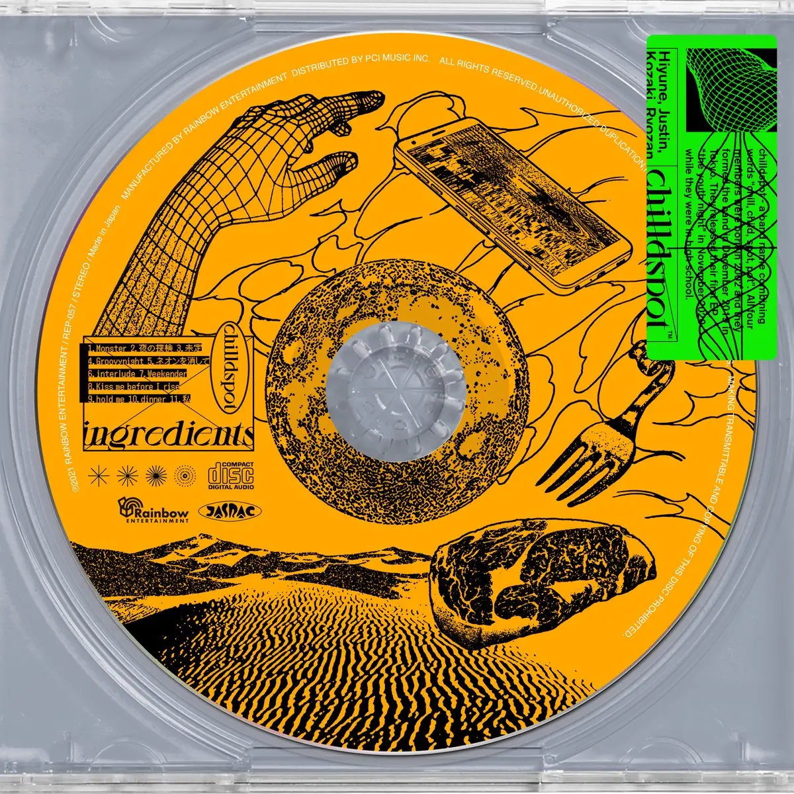

Album#28
ingredients


{kind=link}
(„• ᴗ •„) 又听到一张很喜欢的专辑，每首歌我都喜欢！比喩根的声音、旋律、编曲、歌词我都蛮喜欢的，专辑封面也好看。
chilldspot由比喩根（作词、作曲、主唱吉他）、玲山（吉他）、小﨑 （贝斯）三人组成的乐队，全员均参与作词、作曲及编曲。
喜欢这样的创作型歌手/乐队，正如周杨说的：
如果把所有数值拉平，大家唱功一样、制作一样，我的面前摆着一张演唱型的歌手和一张创作歌手的专辑，我可能会毫不犹豫地选择创作歌手的那一张。是因为我们在聊的是一件事情，这件事情是「接近」⸺ 谁离这些文字和旋律更近。此刻我说的「接近」，是不需要揣测，不需要扮演，它是对每个字，每一个音符都了解，然后送到你的手里，你打开看到的一行字，上面写着「展信佳」。
专辑的大部分歌曲都有一段旋律间奏，都挺好听。
除了这张专辑，也推荐听听「chilldspot 3rd one man live tour "模様" in Zepp DiverCity」，里面的「Girl in the mirror」、「crush」、「愛哀」我也喜欢，也可以听听「ingredient」里一些歌的 Live 版本。
TRACKLIST
Monster
片方の音を今弾け飛ばせたら
迎えに行くよ 迎えに行くよ
ねえ今さどこにいるの
事故事件もう どっちでもいいわ
思い通りしたいなら
自分自身でも飼ってればいいんじゃない?
あぁ いいんじゃない
ねえ今何を見ているの
心待ちにして作る永遠の子供たち
あなたは誰なの
立場や威厳の前に1人の人として聞くわ
あなたは誰なの
過信なんかしてんじゃないわよ
全知全能でもないくせに
片方の音も今弾け飛ばせない
窮屈でしょ 窮屈でしょ?
ねえ今なにをしているか分かってる?
分かってる?
あなたは誰なの
立場や威厳の前に1人の人として聞くわ
あなたは誰なの
過信なんかしてんじゃないわよ
全知全能でもないくせに
あなたは誰なの
自分の見た事聞いた事だけが全てだなんて思って
あなたは誰なの
日々の隠喩を読み取れない可哀想な人ね
あなたは誰なの
立場や威厳の前に1人の人として聞くわ
あなたは誰なの
過信なんかしてんじゃないわよ
全知全能でもないくせに
歌词大意
如果你现在把片面之言打翻
我就去迎接你 我就去迎接你
喂 你现在在哪里
发生事故也好 遭遇事件也行
若想让一切如你所愿
你饲养自己当宠物不就可以了吗？
不就可以了吗
喂 你现在在看着什么
满足了你的期许而制作出的永恒之子吗
你究竟是谁
剥去立场与威严 我只以一个人的身份问你
你究竟是谁
别再过分自信了 你又不是全知全能的神
如今你也无法把片面之言打翻
很憋屈吧 很憋屈吧？
喂 你知道现在自己在做什么吗？
你知道吗？
你究竟是谁
剥去立场与威严 我只以一个人的身份问你
你究竟是谁
别再过分自信了 你又不是全知全能的神
你究竟是谁
你只把自己所见所听的事情当作世界的全部
你究竟是谁
你真是个连普通的暗喻也听不出来的可怜人
你究竟是谁
剥去立场与威严 我只以一个人的身份问你
你究竟是谁
别再过分自信了 你又不是全知全能的神
「Monster」歌词反映了一个人正在指责他们眼中的「怪物」。在整首歌中，歌手都在质疑这个人的身份，强调他们只是一个普通个体，不应拥有过大的权力和权威。「若想让一切如你所愿，你饲养自己当宠物不就可以了吗？」这句歌词暗示歌手认为这个「怪物」 已经越界，不应掌控过多。此外，这个「怪物」还被指责对日常生活的细微之处一无所知。
☞ MV
一开始没怎么看歌词，听到反复的「あなたは誰なの」，像是在一遍遍问自己到底是谁。看了解析，似乎是在质问那些拥有权势的、自以为是的「Monster」。
夜の探検
5時のチャイム覚めて
何をする気にもなれなくて
どうしようかなって思ったの
オレンジと青と紫の
淡い光に誘われて
ベランダに寝巻きででる遅い朝
ベランダの外を眺めると
部活帰りの学生薄着の子供
あの頃は何か世界が鮮やかに鮮明に
そんな事をふと思い出して
泣きそうになる時もある
泣けたらどれだけらくだろうか
あー歳をとった訳でもないのに
景色は枯れて大人になってしまった気がする
あー今日は世の摂理に逆らって
無邪気にノンフィルの世界を
探検するんだ
Uh
何も気にしなくていいよ
ただ夜の風に包まれに行こう
Uh
不安なんてなにもないんだ
月が君をぼーっと見てるだけだから
(だけだから)
久しぶりの運動靴
ちょうちょが勝手に足を運んでく
待ってスマホは最低限持っていかなくちゃ
イヤホンも持っていこうでも
最初は聞かなくていいや
耳が夜になれていくように
あーたまに嗅ぎたくなる夜の匂い
湿ったようなでも爽やかな不思議な匂い
あー星と目が合った気がした
幼い頃の純情な世界に
巻き戻ってく
Uh
穢れを知らぬ子になりたいんだ
全てを忘れて走りたい
Uh
ルンルン気分で踊ろうよ
誰もあなたのことなんて気にしないさ
みんなそう思っているんだ
自分の悪い所なんか
夜に沈め無くなってしまえ
灰色と黒と青色の
魅惑の世界に誘われて
でもそんなことできるわけないんだよな
Uh
無くすことはできないから
せめてのも時間夜に預けるんだ
Uh
不安なんてなにもないんだ
月が君をぼーっと見てるだけだからさ
歌词大意
被五点钟的闹铃吵醒
什么都提不起劲
想着要怎么办才好
被橙色的、青色的、紫色的
淡淡光芒所吸引
穿着睡衣走到阳台的、迟来的早晨
朝阳台外看去
有从社团活动回家的学生、衣着单薄的孩子
那时候总觉得世界鲜艳又清晰
忽然想起那样的事
也有快要哭出来的时候
要是能哭出来该有多轻松呢
啊 明明还没上年纪
景色就已变得黯淡无光、自己也成了大人
啊 今天要违背世间的常理
天真无邪地走进那不加滤镜的世界
探险去吧！
Uh
什么都不用在意
只是去被夜风包起来吧
Uh
根本没有什么不安
因为月亮只是在呆呆地看着你
（只是这样而已）
好久没穿上运动鞋
下意识绑个蝴蝶结迈开了腿
等一下 至少拿上手机
耳机也带上吧，不过
一开始不用听也行
让耳朵去习惯黑夜的声音
啊 偶尔也想闻一闻夜晚的气息
那种湿润又清爽
不可思议的味道
啊 和星星对上了眼
年幼时那纯真的世界里
真想回到那个时候啊
Uh
想做个纯洁无邪的孩子
忘掉一切 尽情奔跑
Uh
用轻快的心情来跳舞吧
谁也不会在意你的事啦
大家都是这么想的
自己那些不好的地方什么的
沉到夜里去，消失掉吧
灰色的、黑色的、蓝色的
被魅惑的世界引诱着
但那种事是不可能做到的啊
Uh
因为没法把它们弄丢
至少把这一刻托付给夜晚
Uh
根本没有什么不安
因为月亮只是在呆呆地看着你啊
「夜の探検」 探讨了想要以孩童般的纯真好奇心去探索世界的渴望。歌词描述了清晨在阳台上的沉思时刻，歌手眼中的世界呈现出本来的面貌，感觉它仿佛失去了往日的活力，却又重新苏醒。歌手回忆起过去事物似乎更加清晰、色彩更加斑斓的模样，并渴望再次找回那种感觉。这营造出一种怀旧与忧郁的氛围。这种想要再次探索并寻求那些感受的欲望，正是驱动歌手的动力。
随着歌曲的进行，一种从成人世界的束缚中解脱出来的渴望愈发深沉。探索夜晚这一构思，是逃离日常生活忧虑与焦虑的一种方式。歌曲传达了这样一个观点：通过拥抱那些被我们遗忘的事物，并以孩童般的好奇心重新发现世界，我们可以找到幸福。
☞ MV ☞ 比喩根(chilldspot) - 夜の探検【Acoustic】
小时候充满了天马行空的想法，世界看起来是五彩斑斓的，十分有趣。但是不知不觉长大了，世界似乎变得暗淡了许多，好像对什么都失去了兴趣，怎么就变成这样了呢？有时也会想回到那个天真无邪的时候吧？
可是，回不去呀，很多都回不去了。
哎，不想那么多了，穿上运动鞋，带上耳机去散步吧。
黑暗有一种疗伤的温度
会让灵魂蒸发掉痛楚
⸺ 暗舞(Album#17 - 哈雷妈妈)
走进夜色里，暂时抛掉各种烦恼，不想这么多了，在夜色的包裹中，短暂地放空，让自己稍微轻松一点吧。
「月が君をぼーっと見てるだけだからさ」(因为月亮只是在呆呆地看着你啊)
让我想到了 Album#18 - 天国印鑑を聴きなさい 里的「Dr. Moonlight」唱的：
「どうか明日もお月様，私を癒してね」（明天也拜托了，月亮小姐， 请将我治愈吧）
多亏有月亮，在夜色中还能感到一些安慰呢。
未定
どれだけ頑張ったって あの子にはなれない
不意に私、悲しくなる
今まで聞いていた事も無視してみてよ
後はどっかへ行こう
無意味に自分を否定し続けなくていいよ
ゆっくりと
貴方と見つめ合って
ひっそりと
比較なんかしないで
行けるとこまで 行けばいいんじゃない?
焦らずに行こう
これだけ頑張っても いつらには勝てない
不意に全て、投げ出したくなる
大丈夫一度、投げ出してみてよ
案外世界は均衡
自分を無下に扱わなくていいよ
ゆっくりと
ひっそりと
大丈夫 一度投げ出してみてよ 案外世界は均衡 (ゆっくりと)
無意味に自分を否定し続けなくていいよ (ひっそりと)
ゆっくりと
貴方と見つめ合って
ひっそりと
比較なんかしないで
行けるとこまで 行けばいいんじゃない?
焦らずに行こう
(ゆっくりと)
(ひっそりと)
(ゆっくりと)
(ひっそりと)
歌词大意
无论我如何努力 也无法成为别人
不经意间 我悲从中来
把到现在为止听到的事也试着无视一下吧
之后随便去哪儿吧
你没必要无意义地一直否定自己
慢慢地
和你对视着
静静地
不必再互相比较
在力所能及的范围内尽量努力就可以了吧？
别着急，慢慢来
就算这么努力，也赢不过那些家伙
突然就想把一切都扔掉
没事的，试着丢开一次吧
出乎意料地，也没有变得很糟
你不用那么糟蹋自己
慢慢地
静静地
没事的 试着丢开一次吧 出乎意料地 世界是均衡的 (慢慢地)
你没必要无意义地一直否定自己 (静静地)
慢慢地
和你对视着
静静地
别做什么比较
去到能去的地方就好了吧?
别着急，慢慢来
(慢慢地)
(静静地)
(慢慢地)
(静静地)
「未定」表达了一种渴望：放下与他人攀比的压力，转而拥抱寻找属于自己道路的想法，无论他人取得了怎样的成就。歌手承认自己无法成为理想中的那个人，但与其沉溺于这种失望，他们建议展望未来，按自己的节奏前行。歌词建议不要总是否定自我或因他人的成功而感到挫败，而是花点时间关注自身，以一种冷静而坚定的意志前行。
☞ MV
比较是没有尽头的，一旦陷入和别人的比较中，就像是陷入到一个深渊里，会很痛苦。还是多关心自己的心情吧，按照自己的节奏来就好了！
「行けるとこまで 行けばいいんじゃない?」
Groovynight
葉っぱで重力を無視する時に僕の心も軽くなる
バイクの音でさえも愛しくなるのさ
君が足音やけに響かせてる
あ、ずっとこのまま僕らどこまでも行けたら
あぁずっとこのままさ
あ、ずっとこのまま僕らどこまでも行けるはず
あぁずっとこのままさ
おいでここまで 浮遊したい groovy night 急じゃない？
おいでここまで 浮遊したい groovy night 気分次第
風呂の中のグリルでさ、熱されたら
僕の心も軽くなる
君の足音さえも愛しくなるのさ
チリチリ頭になったタバコをぽい
あ ずっとこのまま僕らどこまでも行けたら
あぁずっとこのままさ
あ ずっとこのまま僕らどこまでも行けるはず 1
あぁずっとこのままさ
軽い心と足音
おいでここまで 浮遊したい groovy night 急じゃない？
おいでここまで 浮遊したい groovy night 気分次第
おいでここまで 浮遊したい groovy night 急じゃない？
おいでここまで 浮遊したい groovy night 気分次第
歌词大意
当树叶无视重力时 我的心也变得很轻快
连摩托的噪音也变得惹人喜爱
你走来的脚步声也终于响起
啊，若能一直这样，我们无论何处都能抵达
啊，就这样一直下去吧
啊，若能一直这样，我们应该能去往任何地方
啊，就这样一直下去吧
来吧现在就来 想悬浮起来 绝妙的夜晚 有点突然？
来吧现在就来 想悬浮起来 绝妙的夜晚 随心而动吧
当浴室的暖风口被烘热
我的心也变得很轻快
连你的脚步声也变得惹人喜爱
我扔掉滋滋作响马上燃尽的香烟
啊，真希望我们能永远这样，去往任何地方
啊, 一直这样就好了
啊, 要是能一直如此，我们就可以到达任何地方
啊, 一直这样就好了
轻快的心和脚步声
来吧现在就来 想悬浮起来 绝妙的夜晚 有点突然？
来吧现在就来 想悬浮起来 绝妙的夜晚 随心而动吧
来吧现在就来 想悬浮起来 绝妙的夜晚 有点突然？
来吧现在就来 想悬浮起来 绝妙的夜晚 随心而动吧
「Groovynight」的歌词描述了在某些时刻所能感受到的失重感与自由感。
歌词中 「葉っぱで重力を無視する時に僕の心も軽くなる」（当我随落叶一同无视重力时，我的心也变得轻盈）暗示了一种从日常生活束缚中解脱出来的释放感。摩托车的轰鸣声变成了心爱的旋律，甚至连同伴的脚步声也因其节奏感以及与当下的联结而备受珍视。反复出现的副歌 「あぁずっとこのままさ」（啊，就这样一直下去吧）进一步强调了想要留住这份转瞬即逝的感觉的渴望。
歌曲接着描绘了沐浴和滚烫烤架的意象，这两者都对歌手的情绪产生了转变作用。副歌的最后几行，「おいでここまで 浮遊したい groovy night 気分次第」（「来这里和我一起漂浮，这是一个美妙的夜晚，全看你的心情」），鼓励听者拥抱当下，享受放手后所获得的自由。
总的来说，「Groovynight」 表达了对自由的渴望以及对逃离日常生活负担的向往。
☞ MV
专辑里我比较喜欢一首，贝斯的旋律好听，比喩根唱的也很棒，尤其是唱到后面那部分。
看 MV 的话，是一个女孩在夜里四处瞎逛、放飞自我，「groovy night」大概就是这种感觉吧。听着让人忍不住跟着节奏晃动身体。
ネオンを消して (熄灭霓虹灯)
ネオンを消して
そう、着飾りは脱ぎたて
君が turn off して元にもどって
calm down calm down
ネオンを消して
そう、尖りはむきたて
街もturn offして元にもどって
get dark get dark
薄暗い中本当の君を見た
戻りたい 戻れない
なんて素敵な shadow
艶のある highlight も
For me for me for me for me
I want to see your temper
なんて素敵なシャドウ
目元に少し残った
For me for me for me for me
I want to see your temper
ネオンを溶かして
そう着飾る必要も無いね
僕もturn offして元にもどって
Relax mix remix
薄暗い中本当の君をみた
戻れない 戻らない
なんて素敵な shadow
艶のある highlight も
For me for me for me for me
I want to see your temper
なんて素敵なシャドウ
目元に少し残った
For me for me for me for me
I want to see your temper
I want to see your temper
なんて素敵な shadow
艶のある highlight も
For me for me for me for me
I want to see your temper
なんて素敵なシャドウ
目の中少し残った
For me for me for me for me
I want to see your temper
歌词大意
把霓虹灯熄灭掉
是的 把装扮饰品也脱掉
你就此 turn off 回归原样
冷静 冷静
把霓虹灯熄灭掉
是的 把锋芒尖刺也剥掉
街道也就此 turn off 回归原样
变暗 变暗
在淡淡的黑暗中 我见到了真正的你
我好想回去 但回不去了
如此绝妙的 shadow
和略带风流的 highlight
为我为我 给我给我
我好想见见你的真性情
如此绝妙的阴影
稀疏残留于眼角
为我为我 给我给我
我好想见见你的真性情
把霓虹灯融化掉
是的 装扮饰品已不再需要
我也就此 turn off 回归原样
放松 融合 再融合
在淡淡的黑暗中 我发现了真正的你
我回不去了 已无法回去
如此绝妙的 shadow
和略带风流的 highlight
为我为我 给我给我
我好想见见你的真性情
如此绝妙的阴影
稀疏残留于眼角
为我为我 给我给我
我好想见见你的真性情
我好想见见你的真性情
如此绝妙的 shadow
和略带风流的 highlight
为我为我 给我给我
我好想见见你的真性情
如此绝妙的阴影
稀疏残留于眼底
为我为我 给我给我
我好想见见你的真性情
「ネオンを消して」探讨了褪去都市生活的虚饰与浮华，回归真实自我的主题。歌词暗示，通过剥离这些外在层面的修饰，人们可以展现出纯粹的自我和真实的情感。
[…]
总的来说，这首歌鼓励人们保持真诚、忠于自我，并拥抱自己最真实的情感，而不是用外在的伪装来掩盖自己。
☞ MV
开头似乎在下雨，结合霓虹灯，会让我想到一个雨夜，湿答答的，心情也是有点低沉的。
Weekender
心さえも疲れて動けない
いつからか
見渡す限りのタスクに追われ
隠そうとするほどに目立つ
虚しさが
ここにいるはずなのにいない
寝たきりの Sunday
もう嫌なんだって
一旦、いいや
職務放棄して
休みの Monday Tuesday
慣れない感じ
Wednesday Thursday
優越に浸って
Friday Saturday
案外悪くもないな
適当に生きるのも大事かも
休むことが怖かった
甘えだと思われそうで
でも辛いものは辛いんだ
休みの Monday Tuesday
慣れない感じ
Wednesday Thursday
優越に浸って
Friday Saturday
案外悪くもないな
適当に生きるのも大事かも
大事かも
大事なのかな
そうだよな
休みの Monday Tuesday
慣れない感じ
Wednesday Thursday
優越に浸って
Friday Saturday
案外悪くもないな
適当に生きるのも
休みの Monday Tuesday
慣れない感じ
Wednesday Thursday
優越に浸って
Friday Saturday
案外悪くもないな
適当に生きるのも大事かも
歌词大意
连心都累得动弹不得
不知从何时开始
被放眼望去无穷无尽的任务追赶
越是想要遮掩就越是显眼
这份空虚感
明明应该在这里却又仿佛不在
在床上躺平的 Sunday
已经受够了
干脆就这样吧
先把活儿撂一边
休假的 Monday Tuesday
尚未习惯的感觉
Wednesday Thursday
沉浸在优越感中
Friday Saturday
意外地还不赖嘛
随性地活着或许也很重要
曾经害怕休息
怕被认为是太娇惯了
但痛苦的事终究是痛苦的啊
休假的 Monday Tuesday
尚未习惯的感觉
Wednesday Thursday
沉浸在优越感中
Friday Saturday
意外地还不赖嘛
随性地活着或许也很重要
也许很重要
真的很重要吗
是啊，没错吧
休假的 Monday Tuesday
尚未习惯的感觉
Wednesday Thursday
浸在优越感中
Friday Saturday
意外地还不赖嘛
随性地活着或许也很重要
休假的 Monday Tuesday
尚未习惯的感觉
Wednesday Thursday
沉浸在优越感中
Friday Saturday
意外地还不赖嘛
随性地活着或许也很重要
「Weekender」探讨了因持续忙碌而带来的压力与疲惫，以及偶尔停下来享受生活的重要性。开头几行描述了那种精疲力竭到连心都无法跳动的感觉，以及不断被待办事项不断追赶的状态。你越是试图掩饰内心的空虚感，它就变得越发明显。尽管身体在场，但在心理和情感上却有一种并不真正存在的疏离感。
副歌部分随后谈到了人们如何厌倦了周日卧床不起的生活，并决定在周一和周二休假，尽管这种感觉有些陌生。周三和周四则沉浸在忙碌带来的优越感中，而周五和周六竟然也出人意料地不错。歌词暗示，以一种无忧无虑的方式生活也是可以的，休息并不是什么可耻的事情 ⸺ 即使在别人看来这像是在偷懒或懈怠。这首歌传达的整体信息是：当你感到疲倦时，休息和放松很重要，要尽情享受生活。
明明很不开心，却还是委屈自己继续工作，直到被工作耗尽，周天躺在家什么都不想做。
要不试试躺平吧，把工作撂在一边吧。
休假的周一周二，还有点不习惯；周三周四，开始感到开心了，原来白天的阳光是这么舒服，微风如此和煦；周五周六，意外地感觉还不赖嘛！
所以不要把自己逼得那么紧，随性一些生活也很重要！
今天正好是周天，正适合听这首。
什么？你问明天周一，推荐听什么？可以听听窦靖童的「Monday」！整张「春游」的专辑都很不错。你还问周二听什么？关于周二我暂时想不到了，自己探索吧～
Kiss me before I rise
密度が小さくなり始めた気持ち
体積は変わらないけど軽くなって
苦しく溺れるのに慣れてしまったの
お互いの息分け与え合わずに
チクタク針が進む 先端は鋭利
刺しあって 抜きあって
Kiss me before I rise
私の何かが変わる前に 早く
Kiss me before I rise
飛びかけた風船を掴む子供のように
枯葉が舞う様は桜より切に綺麗で
本当の自由を手にしたみたい
苦しく溺れるのに慣れてしまったの
お互いの核心答え合わずに
チクタク針が進む 鈍感な baby
刺しあって 抜きあって
Kiss me before I rise
私の何かが変わる前に 早く
Kiss me before I rise
飛びかけた風船を掴む子供のように ように ように
歌词大意
心情的密度开始慢慢变小
而体积一如既往 于是逐渐轻盈
沉溺水中明明痛苦万分 为什么最后习以为常
连彼此的气息都不能让渡
指针一分一秒前进 尖端锐利
互相穿刺 互相拔除
Kiss me before i rise
在我尚未改变之前 快点
Kiss me before i rise
就像奋力抓住快要飞走的气球的孩子那样
枯叶飞舞的模样 比樱花更悲切和漂亮
仿佛伸手够到了真正的自由
沉溺水中明明痛苦万分 为什么最后习以为常
连彼此的核心都匹配不上
指针一分一秒前进 感觉迟钝的 Baby
互相穿刺 互相拔除
Kiss me before i rise
在我尚未改变之前 快点
Kiss me before i rise
就像奋力抓住快要飞走的气球的孩子那样
「Kiss me before I rise」歌词似乎描述了两个处于一段关系中但未能进行有效沟通的人。他们已经习惯了感情中的痛苦与挣扎，并刻意回避去解决面临的真实问题。开篇的「密度が小さくなり始めた気持ち 体積は変わらないけど軽くなって」可以理解为这段感情中的情感变得不再那么强烈和沉重。两人都沉溺在情绪之中，却已习以为常。「お互いの息分け与え合わずに」这句词则意味着他们没有在照顾彼此，也没有在帮助对方顺畅呼吸。
接下来的几行歌词「チクタク針が進む 先端は鋭利 刺しあって 抜きあって」可以解读为时间的流逝，而针的锋利则代表了他们所感受到的痛苦。他们互相伤害又彼此疏离，但内心深处仍渴望被拥抱和被爱。
副歌部分「Kiss me before I rise 私の何かが変わる前に 早く Kiss me before I rise 飛びかけた風船を掴む子供のように」表达了他们希望在一切发生改变、在失去挽回机会之前紧紧抓住彼此。他们想要握住曾经拥有的幸福，就像孩子抓住即将飞走的气球一样不愿放手。
☞ chilldspot - Kiss me before I rise(Acoustic)
这大概是在讲两个即将分手的人：
「Kiss me before I rise 飛びかけた風船を掴む子供のように」
抱紧我，别让我像气球一样飘走，再也找不回来了。
hold me
目の閉じた公園を 2 人歩く
望んだ世界 息が降り積もってく
僕の中を囁く 煌びやかな君の目が
心に降り積もってく
いっそ息なんて奪ってくれよ 奪ってくれよ
いっそ口なんて奪ってしまえよ 奪ってしまえよ
もっと
そっと僕を抱きしめて当然のように
これ以上なにも喋らないで瞭然のように
油絵のような水彩画のような夢が
僕らを交わらせる
ゆらゆらと揺れてるブランコが僕らの
歩幅を揃えさせる
もっと
そっと僕を抱きしめて当然のように
これ以上なにも喋らないで瞭然のように
ずっと
もっと僕を抱きしめて当然のように
これ以上なにも喋らないで瞭然のように
歌词大意
两人漫步于沉睡的公园
在渴望的世界里，被呼吸逐渐填满
你那看透我的闪耀目光
洒满在我的心中
剥夺我的呼吸吧
索性连我的嘴也夺去吧
静静地抱紧我 就像理所应当一样
至此无需多言 如同一切明了一般
似油画似水彩画的梦
使我们交会
跟着摇曳的秋千
我们的步调逐渐一致
再多一点
静静地抱紧我吧 就像理所应当一样
至此无需多言 如同一切明了一般
永远地
更用力地抱紧我吧 就像理所应当一样
至此无需多言 如同一切明了一般
「hold me」描绘了一幅生动的画面：两人漫步在关闭的公园里，雪花在四周飘落，他们在彼此的拥抱中寻找慰藉。歌手讲述了陪伴在侧的那个人如何用闪烁的双眼向自己低语，以及这种被拥抱的感觉是多么自然且不可或缺。他们表达了渴望被进一步紧抱并陷入静默的愿望，这样就能沉浸在这一刻，无需言语，也无需他求。
歌词唤起了一种亲密而脆弱的情感，歌手渴望简化自己的世界，在他人温暖的怀抱中寻找喘息之机。其中蕴含着一种渴望，渴望对方能夺走自己的呼吸或声音，让自己能够心无旁骛地存在于当下。结合公园的意象、将两人联系在一起的如画梦境，以及秋千的晃动，歌词营造出一种奇幻的氛围，吸引着听众并让他们感同身受。
☞ 比喩根(chilldspot) - hold me【Acoustic】
幻想着在公园里，只有自己和对方两个人，一起散步，呼吸交织，想要拥抱和亲吻，想要像水彩一般融合彼此的色彩，不分彼此，一切无需多言。
dinner
Let's make dinner together
不平不満を消費する為のカロリーはもう尽きたし
食べ過ぎちゃ太るし
顔と口に出ていなければ思ってないのと同じだもん
ああもう 今日はどいつを食べてしまおうか
ローズマリーで臭みを消して
こんな肉でも少しは旨くなるだろう
さあ豪快にステーキで頂こう
Let's make dinner together
とびきりの夢の中では
我慢しなくていいんだからね
さあ今夜も
Let's eat dinner together
La la la la la la la la
Play drunk で憑依する為の手順はもう踏んだし
柄にも無く舌打ち
顔と口に出てきたらおやすみの時間だろう?
ああ食べてしまおうか
I like meat
I like fish
I like noodle very much
I like rice
I like sweets
Eat up everything!
Let's make dinner together
とびきりの夢の中では
我慢しなくていいんだからね
さあ今夜も
Let's eat dinner together
La la la la la la la
Let's make dinner together
とびきりの夢の中では
さあ今夜も
Let's eat dinner together
La la la la la la la la la la la la la la la
歌词大意
Let's make dinner together
一起做晚饭吧
用来消耗不满的卡路里已经没了
吃多了会胖
不表现在脸上和嘴上就等于没想过嘛
啊，已经，今天要把哪个家伙吃掉呢
用迷迭香去腥
就这种肉也会稍微好吃点吧
来吧，豪爽地来份牛排开吃吧
Let's make dinner together
在特别棒的梦里
不用忍着的哦
来，今晚也
Let's eat dinner together
La la la la la la la la
已经按照醉酒后附身的步骤进行了
少见地啧了一声
如果表现在脸上和嘴上，是不是到了该说晚安的时候了?
啊，要不要就吃掉呢
我喜欢肉
我喜欢鱼
我非常喜欢面
我喜欢米饭
我喜欢甜食
把一切都吃光!!!!
一起做晚饭吧
在特别棒的梦里
不用忍着的哦
来，今晚也
一起吃晚饭吧
La la la la la la la
一起做晚饭吧
在梦里
来，今晚也
一起吃晚饭吧
La la la la la la la la la la la la la la la
「Dinner」以轻松愉快的方式讲述了共同烹饪与进餐的乐趣。第一段歌词承认了过度沉溺于美食会导致体重增加和不满这一事实。然而，歌曲强调了通过进食这一行为来享受自我的重要性。歌词建议使用迷迭香来去除肉类多余的杂味，并将其烹制成美味的牛排。
副歌部分鼓励听众聚在一起共进晚餐。整首副歌中「let's」一词的使用，暗示了共同烹饪和用餐应该是朋友或家人之间的集体活动。第二段歌词以「play drunk」一词开头，描绘了一种对过度放纵的洒脱态度。歌手表达了对各种美食的喜爱，并鼓励他人「吃光一切」。
总的来说，这首歌唤起了一种欢快的情绪和享受美食的快感。它强调了与他人分享餐食的喜悦，以及共同烹饪和用餐所能产生的积极能量。
☞ MV
唯有美食不能辜负！(・`ω´・)
私
結果が分かりきった延長線上でもがいている
楽して溺れたい 息が奪われる日まで
他人との比較疲れてしまって
昨日の自分って誰なんだっけ
悩んで食べて誤魔化す
そんな一週間を繰り返して
たかが私されど私
調子がいい時も
たかが私されど私
機嫌が悪い時も
たかが私されど私
私が全てを左右する
だから私を連れてどこまでももがかなきゃ
歌词大意
在早已注定的结果中徒劳挣扎
想轻松沉溺其中 直到无法呼吸的那天
厌倦了与他人的比较
昨天的自己究竟是谁来着
烦恼着 用食物来掩饰
如此重复着每一周
虽不过是我 却也是我
状态良好时是我
虽不过是我 却也是我
心情恶劣时也是我
虽不过是我 却也是我
我左右着自己的一切
所以必须带着自己 无论到哪里都要继续挣扎
「私」传达了被困在焦虑、疲惫以及与他人攀比的循环中的挣扎感。开篇句「結果が分かりきった延長線上でもがいている」， (结果早已显而易见，但我仍在同样的轨道上挣扎) 暗示歌手已经接受了某种结果，却不由自主地继续与之抗争。他们渴望一种解脱的方式，想要放纵自己，淹没在世界中直到无法呼吸，这表现出一种绝望感。而「昨日の自分って誰なんだっけ」(昨天的自己到底是谁？)这句词，则反映了歌手在认同过去的自我以及寻找现状意义时的挣扎。
第二段歌词讲述了歌手容易焦虑的倾向，以及通过摄入不健康食物来应对问题的习惯。他们感到自己陷入了某种循环，每一周在挣扎与成长方面似乎都在原地踏步。副歌部分反复唱到「たかが私されど私」（我就是我），强调了这样一种观点：尽管歌手感到自己微不足道，但他们对自己的生活也拥有巨大的掌控力。这是一种自我赋权的呼唤，承认只有靠自己才能掌控并改变现状。
我就是我（想到了张国荣的「我」），「我」或许状态极佳，「我」或许心情很差，但不管如何，「我」就是我，是「颜色不一样的烟火」。即使现在的「我」有些糟糕，也要挣扎着尝试变好一点，毕竟也只有「我」可以决定「我」应该如何。
脚注:
ここすき，喜欢这里唱的，好听！